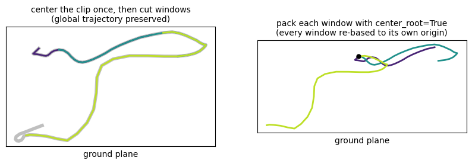
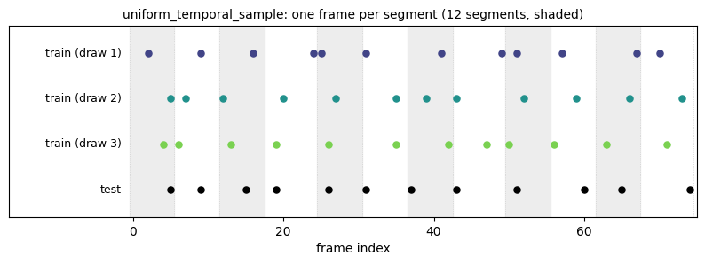

Tensor Layouts & Packing¶
pybvh gives you structured arrays: root_pos of shape (F, 3) and per-joint rotations of shape (F, J, C). pybvh-ml carries the pair as a MotionArrays, and models want tensors in a specific layout. The packers convert between the two, in both directions.
The three layouts¶
| Layout | Shape | Typical consumer |
|---|---|---|
| CTV | (C, T, V) |
GCNs (ST-GCN family) |
| TVC | (T, V, C) |
Transformers with per-joint tokens |
| Flat | (T, D) |
MLPs, sequence models over pose vectors |
Conventions, shared by every packer, for the default streams=("root_pos", "joint_rot"):
- C = channels —
max(3, joint channels): 3 for Euler/axis-angle, 4 for quat, 6 for 6D, 9 for rotmat - T = time / frames
- V = vertices / joints — the root is vertex 0, joints are
1..J - D = flat feature dimension —
3 + J * C_joint
The root vertex carries 3 position channels; when C > 3 (quat, 6D, or rotmat joint data), the root vertex's remaining C - 3 channels are zero padding — the position values themselves are unchanged.

One real clip, all three layouts — the root zero-padding and the flat column map, drawn. (Gallery for every figure.)
Packing and unpacking¶
from pybvh_ml import (
MotionArrays,
pack_to_ctv, pack_to_tvc, pack_to_flat,
unpack_from_ctv, unpack_from_tvc, unpack_from_flat,
)
import pybvh
bvh = pybvh.read_bvh_file("walk.bvh")
root_pos, rot6d = bvh.to_6d() # (F, 3), (F, J, 6)
arrays = MotionArrays(root_pos=root_pos, joint_rot=rot6d)
ctv = pack_to_ctv(arrays) # (6, F, J+1)
tvc = pack_to_tvc(arrays) # (F, J+1, 6)
flat = pack_to_flat(arrays) # (F, 3 + J*6)
root_back, rot_back = unpack_from_ctv(ctv)
Every pack_to_* has a matching unpack_from_* that inverts it, returning a MotionArrays (up to the center_root shift — see below). unpack_from_flat needs to know the channel split: pass joint_channels= matching the packed representation (e.g. joint_channels=6 for 6D), or it raises a ValueError when D - root_channels isn't divisible by it.
Choosing what gets packed: streams=¶
streams= names what is packed and in what order — channel order in the graph layouts, column order in flat. It defaults to ("root_pos", "joint_rot"), which is byte-identical to what every earlier version produced.
arrays = MotionArrays.from_bvh(bvh, "6d", include_positions=True)
pack_to_ctv(arrays, streams=("joint_pos",)) # (3, T, J) — ST-GCN
pack_to_ctv(arrays, streams=("joint_pos", "joint_rot")) # (3+6, T, J)
streams |
CTV shape | note |
|---|---|---|
("root_pos", "joint_rot") |
(max(3, C_rot), T, 1+J) |
the default |
("joint_pos",) |
(3, T, J) |
canonical ST-GCN / CTR-GCN input |
("node_pos",) |
(3, T, N) |
full visual skeleton, end effectors included |
("joint_pos", "joint_rot") |
(3 + C_rot, T, J) |
multi-stream on C |
("root_pos", "joint_pos") |
(3, T, 1+J) |
vertex 0 duplicates joint 0 under "world" centering |
("joint_vel",) |
(3, T, J) |
2s-AGCN motion stream |
("joint_pos", "joint_vel", "joint_acc") |
(9, T, J) |
position / velocity / acceleration |
Two rules:
"root_pos"in the list adds the root as vertex 0 (V = 1 + J); omit it andV = J. This is what removes the off-by-one between packed vertices andskeleton_info["edges"]— see Skeleton Graph Metadata.node_poscannot share a vertex axis with a joint-space stream. Node space includes end sites, so it hasNvertices where joint space hasJ; the packer raises naming the mismatch rather than broadcasting anything.
The unpackers keep their pre-0.6.0 signature and invert only the default streams — everything past the root's channels comes back as joint_rot. A streams-aware unpack_from_* is purely additive whenever it lands; the asymmetry is a deliberate deferral. Until then, slice the channel axis yourself using the widths above.
Velocity and acceleration: joint_vel, joint_acc¶
joint_vel / joint_acc (and node_vel / node_acc) are derived streams: temporal differences of the matching position stream, computed at packing time rather than carried on MotionArrays. Requesting one needs its base present, not packed — streams=("joint_vel",) alone is legal.
ds = MotionDataset.from_preprocessed(
data, layout="ctv", streams=("joint_pos", "joint_vel", "joint_acc"),
augmentation=AugmentationPipeline.standard(data["skeleton_info"]),
temporal="crop", target_length=64) # (9, T, J)
Four conventions, each chosen over a named alternative:
- Unit: raw per-frame difference,
p[t] - p[t-1], nodt— what 2s-AGCN, CTR-GCN and PYSKL use, and what needs no frame rate (MotionArrayscarries none). For physical units multiply by the clip's fps yourself. - Boundary: an order-
kstream zeroes its firstkframes. Prepending instead would leavejoint_acc[1]holdingjoint_vel[1]— a velocity in an acceleration channel. The alternative is central differences, smoother and unbiased but non-causal, hence a label leak for an autoregressive model. - Meaning follows
position_centering. Differencing"world"positions gives world velocity including the root trajectory; differencing"skeleton"positions gives velocity relative to the root — HumanML3D'slocal_velocity. Same shape, different quantity, so an undeclaredposition_centeringis refused rather than guessed. center_rootcannot change them. It subtracts the first frame's root — a shift constant in time, which cancels in every difference.
The ordering guarantee, and why it can't be replicated downstream¶
The Dataset classes derive after augmentation and before temporal standardization. That is the only placement where all of the following hold, and it is not reachable from a collate_fn, which necessarily runs on __getitem__'s output:
temporal="pad"— the derived stream is padded with zeros like its base. Differencing after padding puts a phantom spike at the boundary, sitting exactly where the attention mask is supposed to hide it. Its size is|p[length-1]|, so it scales with how far the last frame sits from the centering origin rather than with anything about the motion: 3.9× the clip's largest real velocity on a 75-frame test rig, 6.7× on an 85-frame clip from a real corpus. There is no bound on it.temporal="resample"—uniform_temporal_samplepicks one random frame per segment, so consecutive sampled indices are 1–9 frames apart. Differencing after sampling multiplies each value by that random gap (~35% error even after normalizing the mean scale). Deriving first and subsampling gives the true per-frame velocity at the sampled instants — the TSN/PYSKL semantics,GenSkeFeatbeforeUniformSample.- Short clips under
resamplewrap via% F; wrapped indices then repeat real measurements instead of straddling the clip-end→clip-start seam.
Under resample, vel is deliberately not diff(pos)
Because velocity is subsampled rather than recomputed, torch.diff of the packed positions does not reproduce the packed velocity — it is inflated by the mean sampling gap, and by roughly its square one order up. That is the correct behaviour, not a bug. Under pad and crop the two agree exactly on frames k..length-1; they differ on the first k frames of a window that starts past the clip start (where the derived stream holds real measurements and the naive recipe holds zeros) and at a pad boundary (where the derived stream holds zeros and the recipe spikes). At every divergence the derived stream is the better value.
Deriving on the full clip before cropping does more arithmetic than deriving only the frames you keep — one np.diff per stream, deliberate and negligible.
center_root — read this once, save a debugging session¶
All three packers accept center_root and it defaults to True: the first frame's root position is subtracted from every frame, so trajectories start at the origin.
Two things to know:
- This is pybvh-ml's convention, not pybvh's. pybvh-ml's
center_rootsubtracts the full 3D first-frame root position. pybvh'scentered="first"is ground-plane-only (the up coordinate is untouched there). - Don't center twice — but know when twice is harmless.
preprocess_directoryalso centers by default and records the choice in the dataset metadata (load_preprocessed(...)["center_root"]). Re-centering a whole already-centered clip is idempotent (its first frame is already at the origin). The real hazard is windowed sub-clips: center the whole clip, then cut windows — if you instead pack each window withcenter_root=True, every window is re-based to its own first frame and the global trajectory is destroyed.

The hazard, drawn: the same windows on the preserved global path (left) vs each re-based to its own origin (right).
When packing arrays that came out of load_preprocessed, pass center_root=False and let the stored metadata tell you whether the data was centered at preprocessing time.
With positions in the container, center_root reaches them too. Under position_centering="world" or "first" the identical first-frame shift is applied to every position vertex; under "skeleton" they are already root-relative and are left alone; with position_centering=None the packer raises rather than guess. Centering only the root would move vertex 0 away from a body that stayed put — the same inconsistency add_root_position_noise guards against, produced at pack time instead.
Knowing what the columns mean¶
For the flat layout, describe_features maps block names to column ranges:
from pybvh_ml import describe_features
desc = describe_features(num_joints=24, representation="6d", include_root_pos=True)
desc["root_pos"] # (0, 3)
desc["joint_rotations"] # (3, 147)
desc.slice("joint_rotations") # slice(3, 147)
It takes the same streams= as the packer, and blocks are named root_pos, joint_rotations, joint_positions, node_positions, joint_velocities, joint_accelerations, node_velocities, node_accelerations:
desc = describe_features(24, streams=("joint_pos", "joint_rot"))
desc.slice("joint_positions") # slice(0, 72)
desc.slice("joint_rotations") # slice(72, 216)
num_nodes= is required for any node-space block — nodes are joints plus end sites, so N cannot be derived from num_joints. That is checked by index space, so node_vel needs it as much as node_pos.
For the richer layout that also covers velocities and foot contacts (as written by pybvh.Bvh.to_feature_array), use pybvh.Bvh.feature_array_layout — it returns a {block_name: slice} dict for the full feature array.
The graph layouts: describe_graph_features¶
describe_features describes the flat layout, and only that. For (C, T, V) / (T, V, C) the question is different — what are C and V? — so it has its own function:
from pybvh_ml import describe_graph_features
desc = describe_graph_features(24, "6d", streams=("joint_pos", "joint_vel"))
desc.num_channels, desc.num_vertices # (6, 24)
desc.shape(64) # (6, 64, 24) — what pack_to_ctv returns
desc.shape(64, "tvc") # (64, 24, 6)
desc.slice("joint_velocities") # slice(3, 6) along C
desc.first_vertex # 0 — the offset to add to skeleton_info["edges"]
Use it so a config check doesn't have to restate the packer's rules, which is where they drift. Three it encodes:
"root_pos"adds a vertex, never a channel block.desc.packs_rootsays whether vertex 0 is the root;"root_pos"is deliberately not a key inchannel_ranges, andfirst_vertexis the offset your edge list needs.Cis the per-vertex widths floored by the root's 3, not summed with it. Sostreams=("root_pos", "joint_pos")isC = 3, not 6, andstreams=("root_pos",)alone is stillC = 3.- Derived streams are always 3 channels; only
joint_rotvaries withrepresentation.
It refuses exactly what the packer refuses — unknown or repeated names, a node-space stream beside a joint-space one, a node-space stream without num_nodes — from the same code, so the two cannot disagree.
Sequence length utilities¶
Models want fixed-length inputs; clips aren't. Three tools, from dumb to smart:
from pybvh_ml import sliding_window, standardize_length, sample_temporal
# Cut overlapping windows: (num_windows, 64, ...)
windows = sliding_window(data, window_size=64, stride=32)
# Pad or crop to an exact length along axis 0
padded = standardize_length(data, target_length=128, method="pad")
cropped = standardize_length(data, target_length=64, method="crop")
# PySKL-style uniform segment sampling (skeleton-based recognition)
clip = sample_temporal(data, clip_length=64, mode="train", rng=rng)
clips = sample_temporal(data, clip_length=64, num_samples=5, mode="train", rng=rng)
sample_temporal divides the sequence into clip_length equal segments and picks one frame per segment — random offsets in "train" mode (temporal augmentation), deterministic offsets in "test" mode (reproducible evaluation, and multiple num_samples are still distinct draws). The index-level primitive is uniform_temporal_sample if you want the indices without applying them.

One frame per segment: three train draws jitter within their segments; test mode is fixed.
See also¶
- Packing API — full signatures
- Sequences API — windowing and sampling reference
- Feature Metadata API —
FeatureDescriptor - PyTorch Integration — where
target_lengthand collate-time padding take over